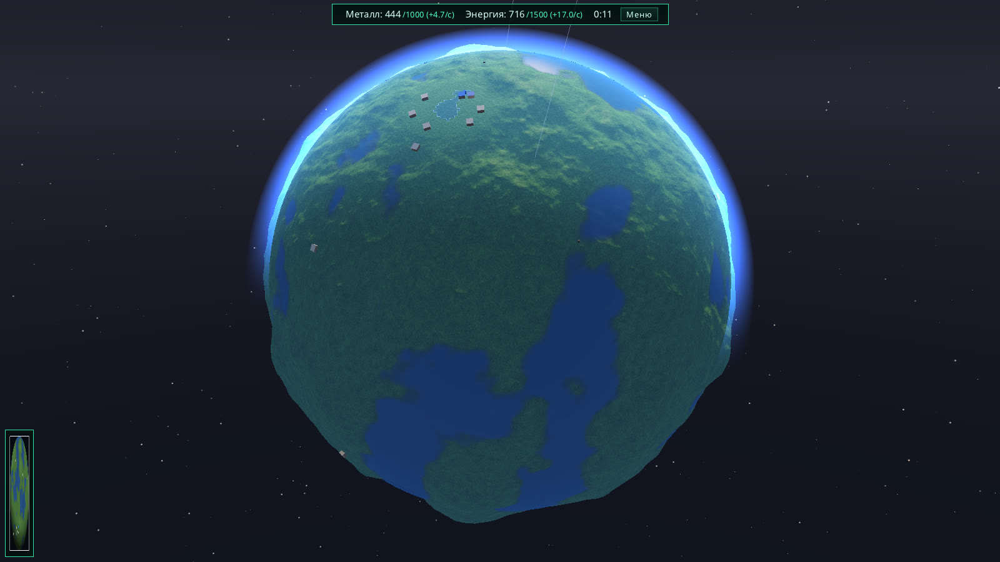

Планеты на TerraWeave: рельеф, биомы, деревья и камни
Рельеф планет теперь строят поля TerraWeave, пересчитанные на сферу, а на суше растут деревья и лежат камни TerraWeave — по климату каждого места.


Генератор планет (пресеты rocky, ocean и moon) берёт высоты и биомы из TerraWeave: та же сумма октав и та же модель климата, что на плоских картах, только поля считаются в трёх измерениях на сфере. Грани куба поэтому стыкуются без швов, а у полюсов холоднее, чем на экваторе.
На суше появились деревья и камни: ели и сосны в холодных местах, дубы и берёзы в лесах и степях, ивы на болотах, валуны и плиты в пустынях и на скалах. Модели — из генератора деревьев Arbor и генератора камней TerraWeave, место и вид для каждой клетки выбираются детерминированно. Плотность и масштаб задаются в карте ключом visual.flora.
- Проверено
- Кадры сняты в игровом клиенте (OpenGL) на перегенерированной Big Planet; проверки генератора — стыки граней, разнесённые старты, симметрия и детерминизм — проходят с новыми эталонами.
- Ограничения
- Море на планетах пока своё, не NEREID: волн и пены у берега ещё нет. Деревья не учитывают туман войны, а шейдеры для Metal на Маке ещё не запускались.